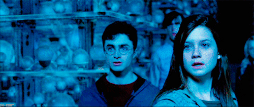
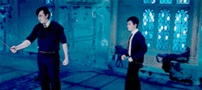
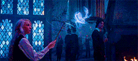
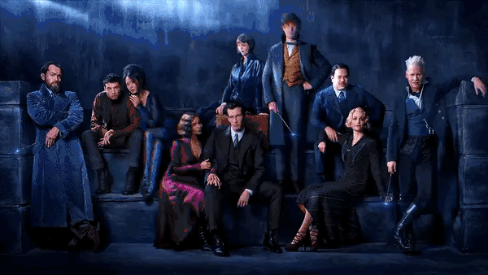
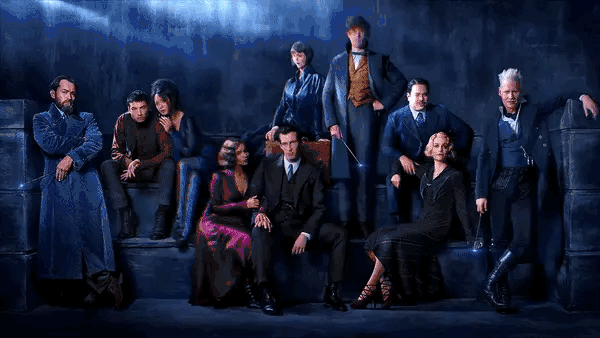

Ginny Weasley and our time in Hogwarts

Ginny returned to Hogwarts on 1 September, 1995 with her brothers. During the train ride on the Hogwarts
Express, Ginny introduced Harry and Neville to Luna Lovegood, a Ravenclaw in her year. With the arrival of new
Defence Against the Dark Arts teacher Dolores Umbridge and a theory-based course, Harry, Ron, and Hermione
decided to form a study group to teach practical defence spells. She joined the group, bringing her boyfriend
Michael with her and several other Ravenclaws. They all met in the Hog's Head where Ginny first demonstrated her
sense of humour by mimicking Umbridge's cough. During the first official meeting of the group, she came up with
the name for the group — Dumbledore's Army,
Neville Longbottom and our time in Hogwarts

When Harry, Ron, and Hermione began organising Dumbledore's Army, Neville was among the first to sign up. At
their first meeting in the Room of Requirement, Neville was left partner-less when they began practise; Neville
instead partnered with Harry. After successfully disarming Harry, Neville then joined Ron and Hermione, so Harry
could check on the others.[36] With Harry's encouragement, by the beginning of Christmas break, Neville had
improved "beyond all recognition." StMungos PM B5C23M1 ChristmasAtStMungos Moment Neville and his grandmother
visiting St Mungo's
During Christmas break, Ron, Hermione, and Ginny learned that Neville's parents were not dead, but patients in
St Mungo's Hospital for Magical Maladies and Injuries, having gone insane after being tortured by a group of
Death Eaters at the end of the First Wizarding War. Harry was the only one who already knew this, having found
out in the Pensieve in 1994, but he had told no one, keeping Neville's secret safe. Before Neville left, his
mother handed him an empty Droobles Blowing Gum wrapper; while his grandmother wanted him to throw it away,
Neville instead pocketed it.[38]
When it was learned that ten Death Eaters escaped from Azkaban in 1996, including three of the ones responsible
for the torture of Neville's parents, Neville did not speak of it, but it "wrought a strange and even slightly
alarming change" in him, according to Harry. He worked harder than anyone in D.A. meetings, and was the fastest
to pick up new spells aside from Hermione
Luna Lovegood and our time in Hogwarts

In Luna's fourth year, she met and befriended Harry Potter, Ronald Weasley, Hermione Granger, and Neville
Longbottom. She believed Harry's declaration that Lord Voldemort was back. As the year progressed, she was
invited to join an underground Defence Against the Dark Arts group called Dumbledore's Army, that was taught and
led by Harry Potter. This organisation was to teach practical defence. She eagerly accepted, working hard along
with the others and enjoying their company. In an effort to make people believe Harry's story, Hermione arranged
an interview for him with Rita Skeeter at the Three Broomsticks — Luna accompanied them so as to persuade her
father to publish the interview in The Quibbler. The copy sold out, every Hogwarts student and possibly every
professor as well, read the copy because of the Education Decree that stated that it was banned on school
grounds.
Draco Malfoy and our time in Hogwarts

In a Care of Magical Creatures lesson, Draco unintentionally provoked the Hippogriff Buckbeak, and was injured,
though he exaggerated how badly he was hurt for attention, and in an attempt to use the incident against Rubeus
Hagrid to get him fired. When Draco mocked him for how upset he became over the case, Hermione slapped Draco in
anger. Lucius tried to get the creature executed, and although he was successful in obtaining this sentence,
Buckbeak was saved through the efforts of Harry and Hermione with the help of a time-turner, and given to Black
when his innocence was proven to Harry, Ron and Hermione .[15] This outcome angered both Draco and his father.


 
